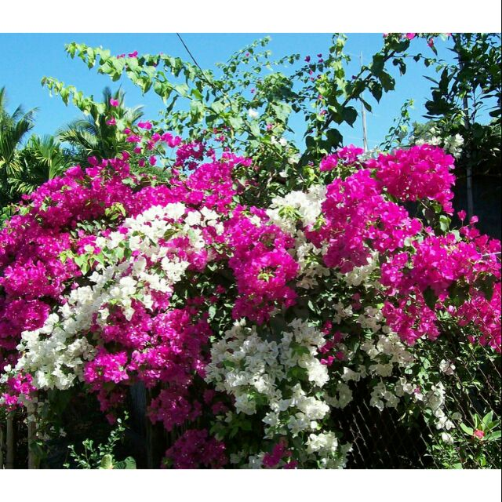
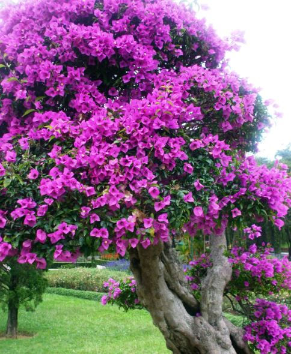
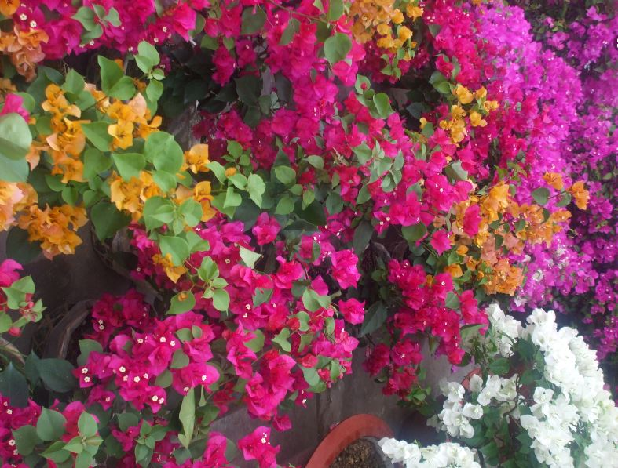

HOA GIẤY
- Lịch sử
Người châu Âu đầu tiên mô tả hoa giấy là Philibert Commerçon (1727-1773), một nhà thực vật học đi cùng đô đốc hải quân Pháp kiêm nhà thám hiểm Louis Antoine de Bougainville (1729-1811) trong chuyến đi vòng quanh Trái Đất của ông, và lần đầu tiên công bố cho ông bởi Antoine Laurent de Jussieu năm 1789. Rất có thể người châu Âu đầu tiên quan sát các loài thực vật này là Jeanne Baret (1740-1807), tình nhân kiêm trợ lý của Commerçon và bà này thì là một chuyên gia về thực vật học. Do phụ nữ không được phép xuống tàu nên bà đã cải trang thành đàn ông để thực hiện chuyến du hành này (và vì thế là người phụ nữ đầu tiên đi vòng quanh địa cầu).

- Tổng quát
Chi Hoa giấy hay chi Bông giấy (danh pháp khoa học: Bougainvillea) là một chi trong thực vật có hoa bản địa khu vực Nam Mỹ, từ Brasil về phía tây tới Peru và về phía nam tới miền nam Argentina (tỉnh Chubut). Các tác giả khác nhau công nhận từ 4 tới 18 loài trong chi. Tên gọi khoa học của chi xuất phát từ Louis Antoine de Bougainville, đô đốc của Hải quân Pháp, một trong số những người đã bắt gặp nó tại Brasil năm 1768.
Các loài trong chi này là các loại dây leo dạng gỗ, cây bụi hay cây thân gỗ có gai. Các loài dây leo mọc cao tới 1–12 m, bò trên các loài cây khác bằng các gai có móc. Các gai có mũi nhọn chứa chất dạng sáp màu đen dễ dàng để lại trong thịt của các nạn nhân không ngờ vực. Chúng luôn xanh tươi khi lượng mưa dồi dào quanh năm, nhưng lại là sớm rụng lá nếu sống trong môi trường có mùa khô. Các lá mọc so le, lá đơn hình trứng nhọn mũi, dài 4–13 cm và rộng 2–6 cm. Hoa thật sự của chúng nhỏ và nói chung có màu trắng, nhưng mỗi cụm 3 hoa được bao quanh bằng 3 hay 6 lá bắc với màu rực rỡ gắn liền với nhóm thực vật này, bao gồm các màu hồng, tím, tía, đỏ, cam, trắng hay vàng. Bougainvillea glabra đôi khi được gọi là "hoa giấy" do các lá bắc của nó mỏng và giống như giấy. Quả là dạng quả bế hẹp, 5 thùy.

- Phân loại hoa giấy
- Bông Giấy Thái Lan có cánh nhỏ hơn, nhưng màu đỏ rực, ít rụng và ra hoa thường xuyên hơn, có tên khoa học là Bougainvillea Spectabilis. Giống Bông Giấy Thái Lan này rất dễ trồng, giâm cành cũng sống, thường hay trồng trước cổng nhà. Loại này có 2 màu, có chùm màu hồng, có chùm màu trắng trên cùng một nhánh, rất đẹp nên cũng phù hợp để trồng trong nhà.
- Bông Giấy Bougainvillea Glabra có nguồn gốc từ Brazil, cây mọc cao thường bò leo trên vách, trên cổng, thân có nhiều gai nhọn, lá màu xanh bóng, mặt dưới màu xanh xám, hình trái xoan, đỉnh hơi nhọn, hoa chùm to qua mùa hè nở đầy cành, rất đẹp, cũng rất dễ trồng, nhưng phải chiết cành trồng thì cây mới sống mạnh. Loại này thích hợp dùng để trồng leo giàn, cổng ngỏ, giống hoa giấy màu hồng.
- Bông Giấy Vạn Hoa Lầu là giống Bông Giấy màu hồng tím, cho hoa màu đỏ hồng lẫn tím. Một sự lựa chọn cho những người yêu thích màu thủy chung. Cây hơi nhỏ, vì vậy thường được trồng trong chậu để làm cảnh
- Một loại Bông Giấy đặc biệt có bông nhiều màu mà không cần ghép đó là Cây Bông Giấy Cao Bồi. Cây có hoa với ba màu đặc trưng là màu đỏ, màu cam, màu trắng. Loại này lá nhỏ, hơi tròn, giữa xanh, chung quanh màu trắng bạc rất lạ. Hoa đỏ giữa lá bạc nổi bật lên rất đẹp
- Bông Giấy Mỹ, đây là loại Bông Giấy có dáng cây hình nấm như bông cúc, có lá và bông nhỏ, bông hoa xinh xắn rất thích hợp cho việc trồng ở những không gian nhỏ và sang trọng.
- Cuối cùng muốn giới thiệu đến các bạn là Bông Giấy Cẩm Thạch. Loại hoa có lá trắng xanh, đặc biệt cây có rất nhiều bông.....
- Giá trị và công dụng cây hoa giấy
- Là lý tưởng như là hàng rào tự nhiên cho các ứng dụng an ninh.
- Được trồng làm bonsai, được trồng làm trang trí cảnh quan nhà, trang trí cảnh quan vườn, trồng làm đẹp cho cổng nhà… Cũng có thể là cây bóng mát cho hoa đẹp.
- Sự phát triển mạnh mẽ , kháng chịu khắc nghiệt làm bông giấy trở thành cây chống nắng nóng trên sân thượng, hiên nhà được yêu thích.